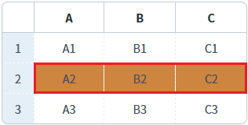
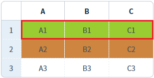

[GridView] 특정 행의 배경색 설정하기
1개요
GridView의 'setRowBackgroundColor' 메소드를 사용하여, 특정 행의 배경색을 설정하는 예제입니다.
2구현된 기능
특정 행의 배경색 설정하기
3예제 테스트 방법
3.1특정 행의 배경색 설정하기
1
STEP 1: 초기 상태 확인하기
GridView의 기본 배경색이 설정되어 있지 않습니다.
Image 1.브라우저(Chrome) 실행 예시

2
STEP 2: 행의 배경색을 변경합니다.
"두 번째 행의 배경색을 'peru'로 설정하기" 버튼을 클릭합니다.
3
STEP 3: 실행 결과를 확인합니다.
두 번째 행의 배경색이 'peru'로 변경됩니다.
Image 2.브라우저(Chrome) 실행 예시

4
STEP 4: 행의 배경색을 변경합니다.
"첫 번째 행의 배경색을 '#9ACD32'로 설정하기" 버튼을 클릭합니다.
5
STEP 5: 실행 결과를 확인합니다.
첫 번째 행의 배경색이 '#9ACD32'로 변경됩니다.
Image 3.브라우저(Chrome) 실행 예시

4구현 예시
4.1특정 행의 배경색 설정하기
1
스크립트를 작성합니다.
GridView의 'setRowBackgroundColor' 메소드를 사용합니다.
Example 1.Script
//예제 파일의 스크립트 "scwin.btn_ex1_onclick" 또는 "scwin.btn_ex2_onclick"를 참고하세요. //GridView 'grd_exam1'의 두 번째 행의 배경색을 'peru'로 설정하기 grd_exam1.setRowBackgroundColor(1, "peru"); //GridView 'grd_exam1'의 첫 번째 행의 배경색을 '#9ACD32'로 설정하기 grd_exam1.setRowBackgroundColor(0, "#9ACD32");
5주요 API
setRowBackgroundColor( rowIndex , color )